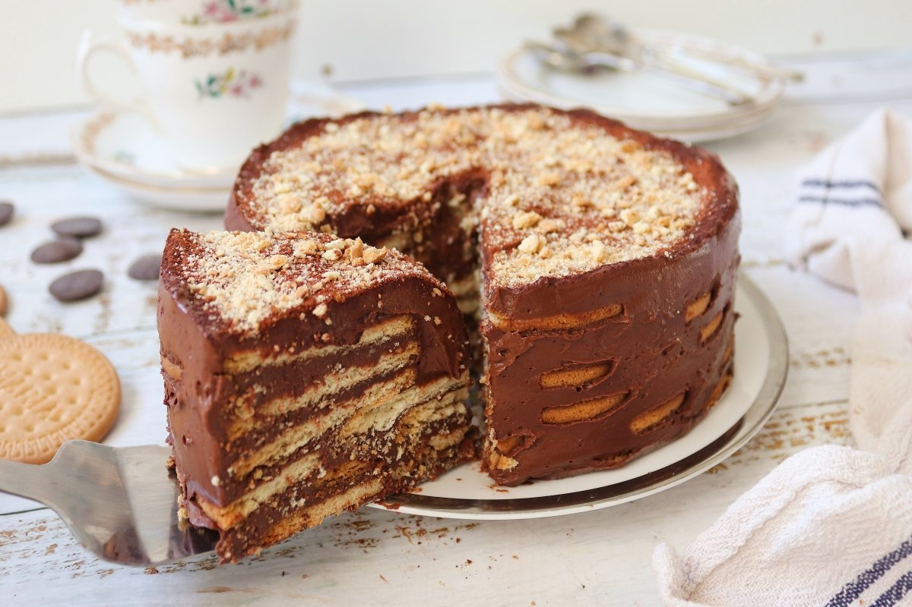
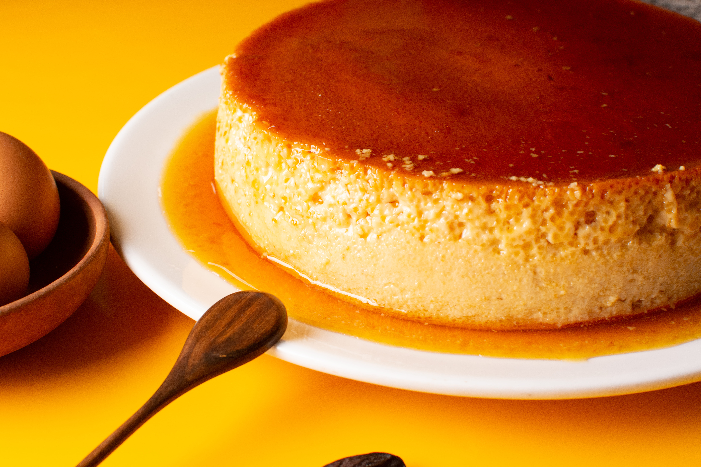
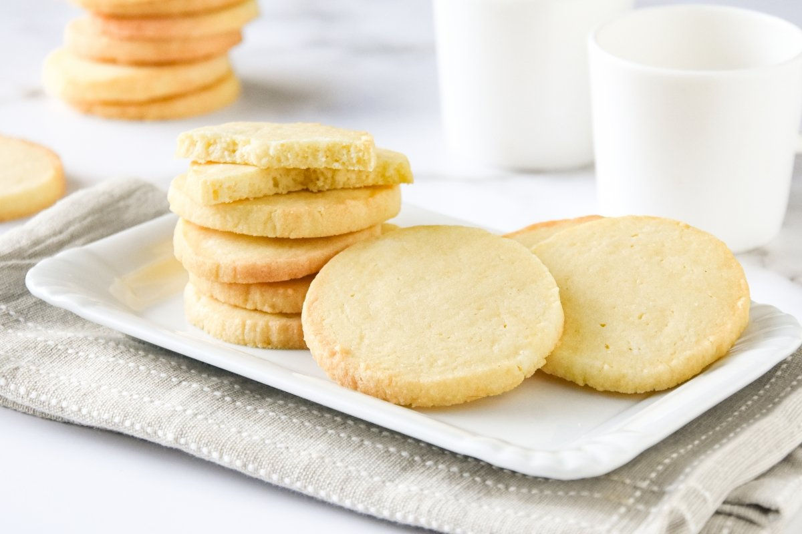
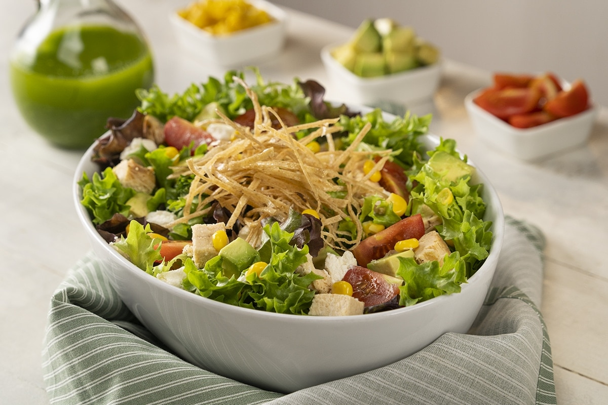

Chiles y Alitas de Pollo Frito
Ingredientes
- ½ taza de salsa de chili dulce Maggi®
- 1/3 taza de salsa de soya
- ¼ taza de miel
- 2 cucharaditas de salsa de chile
- ¼ cucharadita de ajo en polvo
- 1 ½ libras de alitas de pollo
- 1 cucharada de polvo de cinco especias (five-spice powder)
- 1 cucharadita de sal
- 2 cucharadas de aceite de vegetal
Preparación
Combinar la salsa de chile dulce, la salsa de soya, la miel, la salsa de
chile
y
el
ajo en polvo. Poner a un lado. Secar los trozos de pollo; espolvorear
por todos
los
lados con el polvo de cinco especias y la sal.
Calentar el aceite en una sarten mediano sobre fuego medio. Trabajando
por
lotes,
dorar las alas de pollo y poner a un lado. Cuando todas las alitas están
doradas,
vuélvelas a la sarten y cubrir con la salsa. Llevar a un hervor lenta;
reducir
el
fuego a bajo. Cocinar, dándole vuelta al pollo ocasionalmente, durante
10 a 15
minutos o hasta que está completamente cocido. La salsa va ir espesando
durante
la
cocción. Retirar de la sarten; poner en un platón. Cubrir las alitas con
la
salsa
restante y servir.
Chiles Y Alitas De Pollo Frito

Ensalada De Pescado
Ingredientes
- 1/2 Cucharada grande Sazonador Naturísimo Maggi®, 180G
- 1 1/2 Taza Lentejas blandas con un caldo de Pollo MAGGI y escurridas
- 2 Tazas Lechuga Romana cortada en tiras
- 1 Taza Zucchini cortado en tiras
- 1/2 Taza Cebolla Roja cortada en tiras
- 1/2 Taza Pimiento Morron, Rojo cortado en tiras
- 1/4 Taza Aceite De Oliva
- 1 Cucharadita Sazonador Naturísimo Maggi®, 180G
- 1 Cucharada grande Jugo De Limon
Preparación
Sazona el pescado con el Sazonador Naturísimo MAGGI®, en una parrilla
untada de aceite, coloca el pescado y cocina por ambos lados, deja
refrescar y corta en tiras.
Para el aderezo, mezcla aceite de oliva, Sazonador Naturísimo MAGGI®,
jugo de limón, tomillo, miel de abeja y mostaza. Reserva.
En un bowl mezcla todos los ingredientes junto con el pescado reservado,
añade el aderezo y sirve.
Ensalada De Pescado

Carne Asada Servido En Plato Blanco
Ingredientes
- (454g.) 1 libra de carne de res
- (8g.) 2 CUBITOS DE RES MAGGI®
- Sal y pimienta al gusto
- (15g.) 1 cucharada de aceite de oliva
- Aguacate
- Frijol negro
- Encurtido de repollo
- Arroz
- Plátano frito
Preparación
En un recipiente triturar el CUBITO DE RES MAGGI® junto con la sal y la
pimienta e integrar. Sazonar la carne con esta mezcla ayudado con el
aceite de oliva y reservar.
Azar la carne en una parrilla a fuego alto por 3 minutos a cada lado. En
una superficie plana cortar la carne en tiras.
Servir y disfrutar junto con los acompañamientos ya seleccionados
Carne Asada Servido En Plato Blanco

Bife a la Plancha con Papas Fritas
Ingredientes
- 6 Bifes de carne (lomo, asiento, posta rosada)
- 1 Sobre de Caldo en polvo MAGGI® sabor Costilla
- 2 Cucharadas de aceite de oliva
- 2 Cucharadas de finas hierbas (romero, estragón, tomillo)
- 1/4 Taza de agua caliente
- 1 Paquete de espárragos
- 1 Bandeja de tomates cocktail o cherry (300 g)
- 6 Papas mediana cortada en láminas
- 3 Cucharadita de mantequilla
Preparación
En un pequeño bowl junta el Sobre de Caldo en polvo MAGGI® sabor
Costilla con el aceite de oliva indicado y las finas hierbas, revuelve y
agrega el agua hirviendo. Pincela cada uno de los bifes de carne y
reposa durante 10 min. tapados en refrigeración.
Aparte, deja todas las verduras en una budinera apta para el horno.
Condimenta con un toque de sal y pimienta a gusto. Acomoda sobre la
superficie los trozos de mantequilla y lleva a horno fuerte de 180°C
durante 20 minutos aproximados hasta cocerlos completamente.
Mientras, calienta una sartén antiadherente preferentemente con un toque
de aceite y cocina los bifes de carne durante unos minutos por ambos
lados hasta cocerlos completamente y dorarlos. Sirve ambas preparaciones
bien calientes.
Bife a la Plancha con Papas Fritas

Pizza con Rúcula
Ingredientes
- 500grs de harina 0000
- 275cc de agua tibia
- 25 gr de levadura
- 1/2 cdts de azúcar
- 2 1/2 cditas de sal
- 30cc de aceite
- 3/4 tazas de salsa de tomate para pizza (comprada o casera)
- 500grs de mozzarella
- 2 atados de rúcula
Preparación
Para la masa, primero espumamos la levadura, con un par de cucharadas de
agua, y el azúcar, y dejamos unos 10 minutos. Poner la harina sobre la
mesada en forma de corona, distribuir la sal por fuera para que no toque
la levadura. Agregar en el centro la levadura, el agua y el aceite.
Unir hasta tener un bollo liso, suave y elástico, cubrir con film y
dejar una hora o hasta que duplique su volumen.
Desgasificar la masa, amasandola bien y dividir en tres bollos, estirar
uno y poner en una asadura aceitada, cubrir con la salsa de tomate y
meter en el horno precalentado.
Cuando este doradita por debajo, sacarla, poner el jamón y poner la
mozzarella. Cuando el queso se haya derretido retirar.
Agregar la rúcula previamente lavada y escurrida y espolvorear con queso
parmesano rallado, salpimentar y agregar un chorro de aceite. Cortar en
pedazos y servir.
Pizza con Rúcula

Pastas con Tuco
Ingredientes
- 200 gramos de fideos secos
- 300 gramos de carne picada o molida
- 400 gramos de tomates triturados
- 1 cebolla
- 1 zanahoria
- ½ pimiento rojo
- 1 diente de ajo
- 1 copa de vino
- 1 cucharada postre de extracto de tomate
Preparación
Calienta una olla con 1 cucharada sopera de aceite. Cuando tenga la
temperatura adecuada, saltea la cebolla y el ajo. Cuando la cebolla esté
transparente, añade el pimiento y la zanahoria. Remueve cada tanto y
cocina hasta que se doren un poco.
Incorpora la carne picada o molida asegurándote que el fuego esté fuerte
para sellar la carne. Cuando la carne esté blanca, incorpora el vino.
Deja unos minutos y, cuando evapore el alcohol, añade los condimentos
(sal, pimienta, pimentón dulce, tomillo, ají molido) y el extracto de
tomate. Mezcla todo bien.
Finalmente, vierte el tomate triturado y remueve para integrar. Cuando
comience a hervir, baja el fuego al mínimo, tapa y deja cocinar como
mínimo 40 minutos.
Pastas con Tuco

Torta Marquesa
Ingredientes
- 300 g de chocolate
- 200 g de mantequilla
- 4 yemas
- 400 g de leche condensada
- 20 g de cacao
- 200 ml de leche
- 1 cucharadita de canela
- 350 g de galletas María
- Cacao, galletas machacadas o chocolate rallado para decorar
Preparación
Fundir el chocolate troceado junto a la mantequilla en un bol a baño
María. Cuando esté completamente fundido, retirar del fuego y añadir las
yemas mientras se bate con un batidor de varillas para evitar que se
cocinen.
Agregar la leche condensada y el cacao e integrar bien. Engrasar un
molde de 30x20 centímetros con un poco de mantequilla. Colocar una fina
capa de la mezcla de chocolate. Hacer una capa encima de galletas
ligeramente remojadas en la leche mezclada con la canela (se pueden
rellenar los huecos que queden con trozos pequeños de galleta). Hacer
sucesivas capas de esta manera hasta terminar con la mezcla de
chocolate.
Dejar reposar en la nevera, preferiblemente de un día para otro.
Espolvorear con más cacao, galletas machacadas o chocolate rallado.
Torta Marquesa

Quesillo
Ingredientes
- 1 lata de Leche Condensada NESTLÉ®
- 395 ml de agua potable (utilizar la misma lata para medir la cantidad de agua)
- ½ taza de azúcar
- 4 huevos
- 1 cucharadita de vainilla
Preparación
Licúa todos los ingredientes excepto el azúcar. Coloca en una quesillera
el azúcar y cocina a fuego medio hasta que caramelice. Mueve el caramelo
en los lados del molde de la quesillera. Si no tienes una quesillera,
puedes utilizar un molde redondo.
Agrega la mezcla anterior en la quesillera, coloca en baño de maría y
cocina en el horno por 45 minutos a 180°C (356°F).
Deja que enfríe y refrigera antes de servir. Desmolda con cuidado y
disfruta de este delicioso quesillo con Leche Condensada NESTLÉ®.
Quesillo

Galletas de mantequilla
Ingredientes
- 250 g de Mantequilla en pomada
- 150 g de Azúcar
- 1 Huevo XL (o 1 M y una yema)
- 550 g Harina de repostería
- 5 ml Esencia de vainilla
Preparación
Batimos la mantequilla y el azúcar con unas varillas eléctricas.
Añadimos la esencia de vainilla y el huevo, batiendo hasta integrar
ambos. Añadimos la harina, poco a poco, primero con batidora y luego a
mano sobre una superficie limpia. Estiramos sobre una lámina de papel
sulfurizado o de horno dejando 1/2 cm de grosor.
Dejamos reposar en la nevera durante un mínimo de 30 minutos, mejor algo
más de tiempo. Cortamos las galletas con un cortapastas, las pasamos a
una bandeja cubierta con papel vegetal y las refrigeramos otros 30
minutos.
Precalentamos el horno a 180º C con calor arriba y abajo sin aire.
Horneamos las galletas unos 10-12 minutos, o hasta que comiencen a
dorarse. Transferimos las galletas a una rejilla metálica donde dejamos
que se enfríen antes de consumir o decorar.
Galletas de mantequilla
Sopa de fideos con brócoli
Ingredientes
- 1 1/2 Litros de caldo de pollo®
- 3 Jitomates, cortados en cuartos
- 1 Diente de ajo
- 1/4 Pieza de cebolla, mediana
- 2 Cucharadas de aceite vegetal
- 1 Paquete de pasta de fideo #2 (220 g)
- 1 Taza de brócoli, cortado en ramilletes pequeños
- 2 Cubos de Concentrado de Tomate con Pollo CONSOMATE®
Preparación
Licúa la mitad del caldo con los jitomates, el ajo y la cebolla; cuela.
Calienta el aceite, fríe el fideo hasta que cambie de color, añade el
resto del caldo con lo que licuaste y el brócoli; tapa y cocina a fuego
medio de 8 a 10 minutos o hasta que el fideo y el brócoli estén suaves.
Agrega el Concentrado de Tomate con Pollo CONSOMATE®, mezcla y cocina 2
minutos más. Ofrece.
Sopa de fideos con brócoli

Ensalada de pollo y lechuga con elote
Ingredientes
- 1 Lata Media Crema NESTLÉ® Reducida en Grasa*
- 1/2 Paquete Queso crema light
- 1 Lata Granos de elote amarillo enlatado escurridos (200 g)
- 1 Pieza Lechuga escarola desinfectada y cortada
- 400 Gramos Pechuga de pollo cocida y deshebrada
- 1 1/2 Cucharaditas Sal con cebolla en polvo
Preparación
Licúa todos los ingredientes excepto el azúcar. Coloca en una quesillera
el azúcar y cocina a fuego medio hasta que caramelice. Mueve el caramelo
en los lados del molde de la quesillera. Si no tienes una quesillera,
puedes utilizar un molde redondo.
Agrega la mezcla anterior en la quesillera, coloca en baño de maría y
cocina en el horno por 45 minutos a 180°C (356°F).
Deja que enfríe y refrigera antes de servir. Desmolda con cuidado y
disfruta de este delicioso quesillo con Leche Condensada NESTLÉ®.
Ensalada de pollo y lechuga con elote

Lasaña de Carne Molida al Horno
Ingredientes
- 10 Jitomates cortados en cuartos
- 3 Cucharadas de aceite de oliva
- 1/4 De pieza de cebolla cortada en trozos
- 2 Dientes de Ajo
- 1/2 Cucharadita de sal con cebolla en polvo
- 1 Taza de agua
- 1 1/2 Cucharadas de finas hierbas
- 1/4 De cucharadita de pimienta negra molida
- 2 Cucharadas de aceite vegetal
- 1 Cucharada de cebolla picada finamente
- 1 Cucharadita de ajo picado finamente
- 600 Gramos de carne molida de res
- 250 Gramos de champiñones rebanados
- 9 Láminas de pasta para lasaña precocida
- 200 Gramos de queso tipo manchego
Preparación
Horno precalentado a 200 °C. Para la salsa, coloca los jitomates en una
charola con el aceite de oliva, la cebolla y el ajo; hornea a 200 °C de
45 a 50 minutos o hasta que estén dorados. Licúa los jitomates, la
cebolla y los ajos rostizados con el Concentrado de Tomate con Pollo
CONSOMATE® la sal con cebolla, el agua, las hierbas finas y la pimienta.
Para el relleno, calienta el aceite y fríe la cebolla con el ajo hasta
que cambien de color, añade la carne, la sal con cebolla, el Jugo
MAGGI®, la Salsa Tipo Inglesa CROSSE & BLACKWELL® y los champiñones;
mezcla y cocina hasta que la carne esté cocida.
En un refractario engrasado con un poco de aceite, coloca una cucharada
de salsa, una capa de láminas de lasaña precocida, una de relleno, una
de salsa y queso rallado; repite el procedimiento hasta terminar con
todos los ingredientes. Por último, termina con una capa de queso tipo
manchego. Hornea a 200 °C de 20 a 25 minutos. Ofrece.